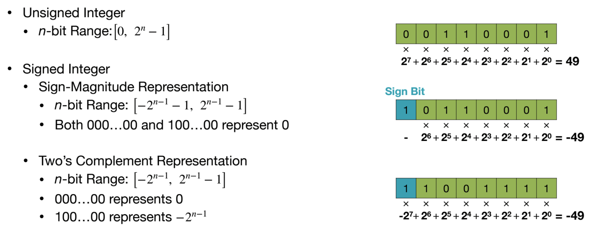
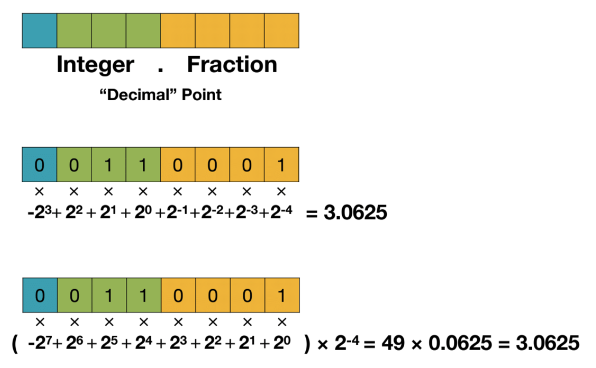
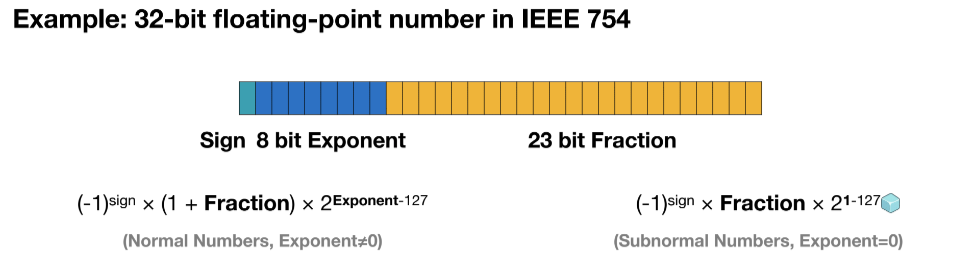
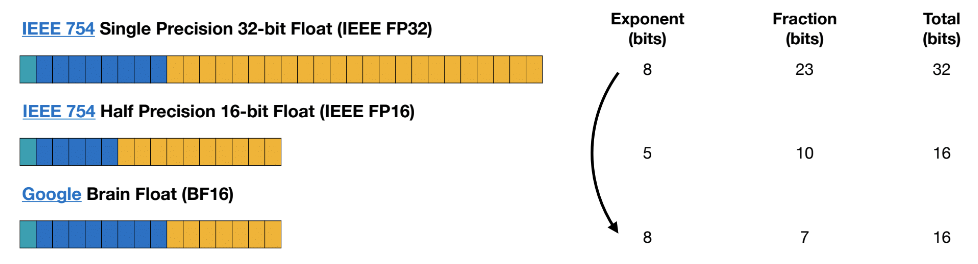
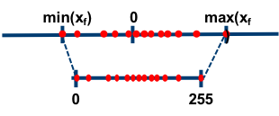
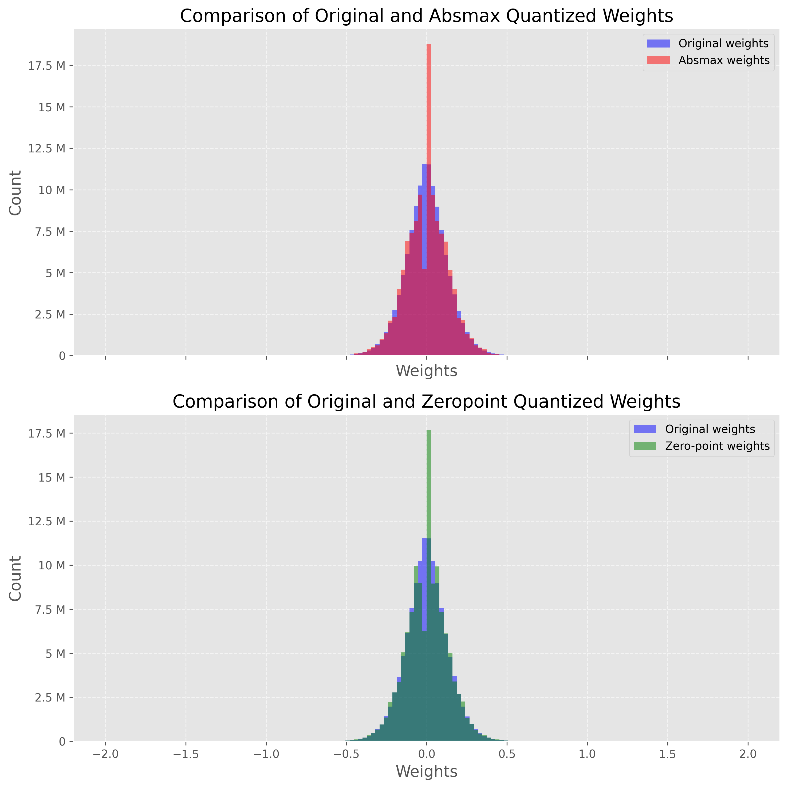
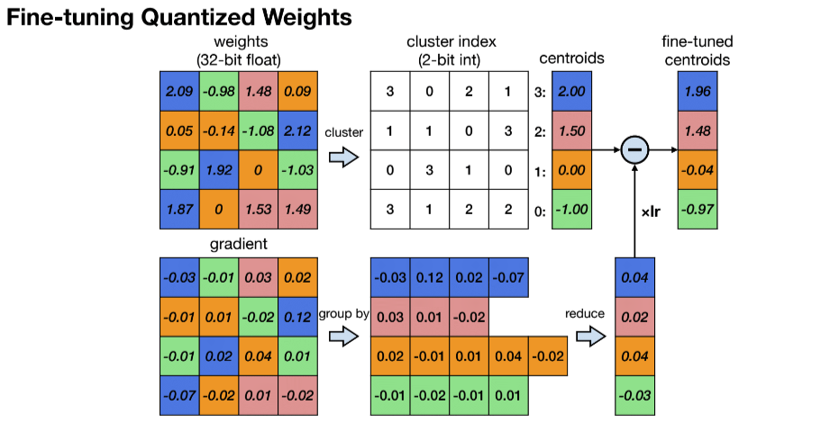

import torch
def zeropoint_quantize(X):
# Calculate value range (denominator)
x_range = torch.max(X) - torch.min(X)
x_range = 1 if x_range == 0 else x_range
# Calculate scale
scale = 255 / x_range
# Shift by zero-point
zeropoint = (-scale * torch.min(X) - 128).round()
# Scale and round the inputs
X_quant = torch.clip((X * scale + zeropoint).round(), -128, 127)
# Dequantize
X_dequant = (X_quant - zeropoint) / scale
return X_quant.to(torch.int8), X_dequantLanguage models are becoming larger and larger all the time.
Therefore, these models are hard to run on easily accessible devices. For example, just to do inference on BLOOM-176B, you would need to have 8x 80GB A100 GPUs (~$15k each). To fine-tune BLOOM-176B, you’d need 72 of these GPUs! Much larger models, like PaLM would require even more resources. Because these huge models require so many GPUs to run, we need to find ways to reduce these requirements while preserving the model’s performance. Various technologies have been developed that try to shrink the model size, you may have heard of quantization and distillation, and there are many others.
What is Quantization?
Quantization is a technique to reduce the computational and memory costs of running inference by representing the weights and activations with low-precision data types like 8-bit integer (int8) instead of the usual 32-bit floating point (float32).
Reducing the number of bits means the resulting model requires less memory storage, consumes less energy (in theory), and operations like matrix multiplication can be performed much faster with integer arithmetic. It also allows to run models on embedded devices, which sometimes only support integer data types.
Background of Neural Networks and Precision
Neural networks rely are computational models that are represented in computers as data structures called Tensors. Tensors are multi-dimension matrices populated by numbers that can be stored as floating numbers using variables such as float 32bit (single precision) or float 64bit (double precision).
Integer

Fixed-Point Number

Floating-Point Number


Some Quantization Techniques
We will cover the most basic quantization techniques to advanced ones.
8-bit Quantization
The two most common 8-bit quantization techniques are zero-point quantization and absolute maximum (absmax) quantization. Zero-point quantization and absmax quantization map the floating point values into more compact int8 (1 byte) values
Zero Point quantization

- First, we calculate the scale factor and the zero-point value:
\[\begin{align*} \text{scale} &= \frac{255}{\max(\mathbf{X}) - \min(\mathbf{X})} \\ \text{zeropoint} &= - \text{round}(\text{scale} \cdot \min(\mathbf{X})) - 128 \end{align*} \]
- we can use these variables to quantize or dequantize our weights: \[ \begin{align*} \mathbf{X}_{\text{quant}} &= \text{round}\bigg(\text{scale} \cdot \mathbf{X} + \text{zeropoint} \bigg) \\ \mathbf{X}_{\text{dequant}} &= \frac{\mathbf{X}_{\text{quant}} - \text{zeropoint}}{\text{scale}} \end{align*} \]
Absolute Maximum (absmax) quantization
With absmax quantization, the original number is divided by the absolute maximum value of the tensor and multiplied by a scaling factor (127) to map inputs into the range [-127, 127]. To retrieve the original FP16 values, the INT8 number is divided by the quantization factor, acknowledging some loss of precision due to rounding.
\[ \begin{align*} \mathbf{X}_{\text{quant}} &= \text{round}\Biggl ( \frac{127}{\max|\mathbf{X}|} \cdot \mathbf{X} \Biggr ) \\ \mathbf{X}_{\text{dequant}} &= \frac{\max|\mathbf{X}|}{127} \cdot \mathbf{X}_{\text{quant}} \end{align*} \]
import torch
def absmax_quantize(X):
# Calculate scale
scale = 127 / torch.max(torch.abs(X))
# Quantize
X_quant = (scale * X).round()
# Dequantize
X_dequant = X_quant / scale
return X_quant.to(torch.int8), X_dequantfrom transformers import AutoModelForCausalLM, AutoTokenizer
import torch
torch.manual_seed(0)
# Set device to CPU for now
device = 'cpu'
# Load model and tokenizer
model_id = 'gpt2'
model = AutoModelForCausalLM.from_pretrained(model_id).to(device)
tokenizer = AutoTokenizer.from_pretrained(model_id)
# Print model size
print(f"Model size: {model.get_memory_footprint():,} bytes")/Users/thanhtu/Desktop/perso/llm-from-beginners-to-advanced/.venv/lib/python3.11/site-packages/tqdm/auto.py:21: TqdmWarning: IProgress not found. Please update jupyter and ipywidgets. See https://ipywidgets.readthedocs.io/en/stable/user_install.html
from .autonotebook import tqdm as notebook_tqdm
config.json: 100%|██████████| 665/665 [00:00<00:00, 3.36MB/s]
model.safetensors: 100%|██████████| 548M/548M [00:09<00:00, 59.8MB/s]
generation_config.json: 100%|██████████| 124/124 [00:00<00:00, 1.44MB/s]
vocab.json: 100%|██████████| 1.04M/1.04M [00:00<00:00, 4.00MB/s]
merges.txt: 100%|██████████| 456k/456k [00:00<00:00, 2.73MB/s]
tokenizer.json: 100%|██████████| 1.36M/1.36M [00:00<00:00, 3.33MB/s]Model size: 510,342,192 bytes# Extract weights of the first layer
weights = model.transformer.h[0].attn.c_attn.weight.data
print("Original weights:")
print(weights)
# Quantize layer using absmax quantization
weights_abs_quant, _ = absmax_quantize(weights)
print("\nAbsmax quantized weights:")
print(weights_abs_quant)
# Quantize layer using absmax quantization
weights_zp_quant, _ = zeropoint_quantize(weights)
print("\nZero-point quantized weights:")
print(weights_zp_quant)Original weights:
tensor([[-0.4738, -0.2614, -0.0978, ..., 0.0513, -0.0584, 0.0250],
[ 0.0874, 0.1473, 0.2387, ..., -0.0525, -0.0113, -0.0156],
[ 0.0039, 0.0695, 0.3668, ..., 0.1143, 0.0363, -0.0318],
...,
[-0.2592, -0.0164, 0.1991, ..., 0.0095, -0.0516, 0.0319],
[ 0.1517, 0.2170, 0.1043, ..., 0.0293, -0.0429, -0.0475],
[-0.4100, -0.1924, -0.2400, ..., -0.0046, 0.0070, 0.0198]])
Absmax quantized weights:
tensor([[-21, -12, -4, ..., 2, -3, 1],
[ 4, 7, 11, ..., -2, -1, -1],
[ 0, 3, 16, ..., 5, 2, -1],
...,
[-12, -1, 9, ..., 0, -2, 1],
[ 7, 10, 5, ..., 1, -2, -2],
[-18, -9, -11, ..., 0, 0, 1]], dtype=torch.int8)
Zero-point quantized weights:
tensor([[-20, -11, -3, ..., 3, -2, 2],
[ 5, 8, 12, ..., -1, 0, 0],
[ 1, 4, 18, ..., 6, 3, 0],
...,
[-11, 0, 10, ..., 1, -1, 2],
[ 8, 11, 6, ..., 2, -1, -1],
[-18, -8, -10, ..., 1, 1, 2]], dtype=torch.int8)We can compare these techniques by quantizing every layer in GPT-2 (linear layers, attention layers, etc.) and create two new models: model_abs and model_zp. To be precise, we will actually replace the original weights with de-quantized ones. This has two benefits: it allows us to 1/ compare the distribution of our weights (same scale) and 2/ actually run the models.
import numpy as np
from copy import deepcopy
# Store original weights
weights = [param.data.clone() for param in model.parameters()]
# Create model to quantize
model_abs = deepcopy(model)
# Quantize all model weights
weights_abs = []
for param in model_abs.parameters():
_, dequantized = absmax_quantize(param.data)
param.data = dequantized
weights_abs.append(dequantized)
# Create model to quantize
model_zp = deepcopy(model)
# Quantize all model weights
weights_zp = []
for param in model_zp.parameters():
_, dequantized = zeropoint_quantize(param.data)
param.data = dequantized
weights_zp.append(dequantized)import matplotlib.pyplot as plt
import matplotlib.ticker as ticker
# Flatten weight tensors
weights = np.concatenate([t.cpu().numpy().flatten() for t in weights])
weights_abs = np.concatenate([t.cpu().numpy().flatten() for t in weights_abs])
weights_zp = np.concatenate([t.cpu().numpy().flatten() for t in weights_zp])
# Set background style
plt.style.use('ggplot')
# Create figure and axes
fig, axs = plt.subplots(2, figsize=(10,10), dpi=300, sharex=True)
# Plot the histograms for original and zero-point weights
axs[0].hist(weights, bins=150, alpha=0.5, label='Original weights', color='blue', range=(-2, 2))
axs[0].hist(weights_abs, bins=150, alpha=0.5, label='Absmax weights', color='red', range=(-2, 2))
# Plot the histograms for original and absmax weights
axs[1].hist(weights, bins=150, alpha=0.5, label='Original weights', color='blue', range=(-2, 2))
axs[1].hist(weights_zp, bins=150, alpha=0.5, label='Zero-point weights', color='green', range=(-2, 2))
# Add grid
for ax in axs:
ax.grid(True, linestyle='--', alpha=0.6)
# Add legend
axs[0].legend()
axs[1].legend()
# Add title and labels
axs[0].set_title('Comparison of Original and Absmax Quantized Weights', fontsize=16)
axs[1].set_title('Comparison of Original and Zeropoint Quantized Weights', fontsize=16)
for ax in axs:
ax.set_xlabel('Weights', fontsize=14)
ax.set_ylabel('Count', fontsize=14)
ax.yaxis.set_major_formatter(ticker.EngFormatter()) # Make y-ticks more human readable
# Improve font
plt.rc('font', size=12)
plt.tight_layout()
plt.show()

def generate_text(model, input_text, max_length=50):
input_ids = tokenizer.encode(input_text, return_tensors='pt').to(device)
output = model.generate(inputs=input_ids,
max_length=max_length,
do_sample=True,
top_k=30,
pad_token_id=tokenizer.eos_token_id,
attention_mask=input_ids.new_ones(input_ids.shape))
return tokenizer.decode(output[0], skip_special_tokens=True)
# Generate text with original and quantized models
original_text = generate_text(model, "I have a dream")
absmax_text = generate_text(model_abs, "I have a dream")
zp_text = generate_text(model_zp, "I have a dream")
print(f"Original model:\n{original_text}")
print("-" * 50)
print(f"Absmax model:\n{absmax_text}")
print("-" * 50)
print(f"Zeropoint model:\n{zp_text}")
Original model:
I have a dream and I am ready to help you to find it. "
"If you are able to contact me, please let me know if I am able to speak."
"Do not hesitate to share this with me as
--------------------------------------------------
Absmax model:
I have a dream of becoming an astronaut someday," he said. "I had a lot of fun in Paris until the late 70s. It's my dream, but I just wanted to make it," said Mr. Smith, who flew from Toronto
--------------------------------------------------
Zeropoint model:
I have a dream that you will be at this stage when you will be able to take your life," the statement said.
The man, whose last name was not revealed, was detained for allegedly attempting to smuggle a package containing cocaine worthdef calculate_perplexity(model, text):
# Encode the text
encodings = tokenizer(text, return_tensors='pt').to(device)
# Define input_ids and target_ids
input_ids = encodings.input_ids
target_ids = input_ids.clone()
with torch.no_grad():
outputs = model(input_ids, labels=target_ids)
# Loss calculation
neg_log_likelihood = outputs.loss
# Perplexity calculation
ppl = torch.exp(neg_log_likelihood)
return ppl
ppl = calculate_perplexity(model, original_text)
ppl_abs = calculate_perplexity(model_abs, absmax_text)
ppl_zp = calculate_perplexity(model_zp, absmax_text)
print(f"Original perplexity: {ppl.item():.2f}")
print(f"Absmax perplexity: {ppl_abs.item():.2f}")
print(f"Zeropoint perplexity: {ppl_zp.item():.2f}")Original perplexity: 10.17
Absmax perplexity: 13.77
Zeropoint perplexity: 14.14Optimal Brain Quantization
Let’s start by introducing the problem we’re trying to solve. For every layer \(\ell\) in the network, we want to find a quantized version \(\widehat{\mathbf{W}}_\ell\) of the original weights \(\mathbf{W}_\ell\). This is called the layer-wise compression problem. More specifically, to minimize performance degradation, we want the outputs (\(\mathbf{\widehat{W}_\ell X_\ell}\)) of these new weights to be as close as possible to the original ones (\(\mathbf{W_\ell X_\ell}\)). In other words, we want to find:
\[\arg \min_{\mathbf{\widehat{W}}_\ell} \parallel\mathbf{W_\ell X_\ell} - \mathbf{\widehat{W}_\ell X_\ell}\parallel_2^2.\]
Different approaches have been proposed to solve this problem, but we’re interested in the Optimal Brain Quantizer (OBQ) framework here.
This method is inspired by a pruning technique to carefully remove weights from a fully trained dense neural network (Optimal Brain Surgeon). It uses an approximation technique and provides explicit formulas for the best single weight \(w_q\) to remove and optimal update \(\delta_F\) to adjust the set of remaining non-quantized weights \(F\) to make up for the removal:
\[\begin{align*} w_q &= \arg\min_{w_q} \frac{(\text{quant}(w_q) - w_q)^2}{[\mathbf{H}_F^{-1}]_{qq}},\\ \quad \delta_F &= -\frac{w_q - \text{quant}(w_q)}{[\mathbf{H}_F^{-1}]_{qq}} \cdot (\mathbf{H}_F^{-1})_{:,q}. \end{align*}\]
where \(\text{quant}(w)\) is the weight rounding given by the quantization and \(\mathbf{H}_F\) is the Hessian.
Using OBQ, we can quantize the easiest weight first and then adjust all remaining non-quantized weights to compensate for this precision loss. Then we pick the next weight to quantize, and so on.
A potential issue with this approach is when there are outlier weights, which can result in high quantization error. Usually, these outliers would be quantized last, when there are few non-quantized weights left that could be adjusted to compensate for the large error. This effect can worsen when some weights are pushed further outside the grid by intermediate updates. A simple heuristic is applied to prevent this: outliers are quantized as soon as they appear.
This process could be computationally heavy, especially for LLMs. To deal with this, the OBQ method uses a trick that avoids redoing the entire computation each time a weight is simplified. After quantizing a weight, it adjusts the matrix used in calculations (the Hessian) by removing the row and column associated with that weight (using Gaussian elimination):
\[ \mathbf{H}^{-1}_{-q} = \left( \mathbf{H}^{-1} - \frac{1}{[\mathbf{H}^{-1}]_{qq}} \mathbf{H}^{-1}_{:,q} \mathbf{H}^{-1}_{q,:} \right)_{-p}. \]
The method also employs vectorization to process multiple rows of the weight matrix at once. Despite its efficiency, the OBQ’s computation time increases significantly as the size of the weight matrix increases. This cubic growth makes it difficult to use OBQ on very large models with billions of parameters.
K-Means-based Weight Quantization
This technique is covered in this paper and is the most basic quantization technique. The idea is to quantize the weights of a model to 8-bit integers. The quantization is done by first clustering the weights into K clusters using K-Means clustering. Then, the weights are quantized to the nearest cluster center. The cluster centers are then used as the quantized weights. The quantization process is illustrated in the figure below.

- K-Means-based Weight Quantization only saves storage cost of a neural network model. It does not save computational cost because the weights are still represented as 32-bit floating point numbers during inference.